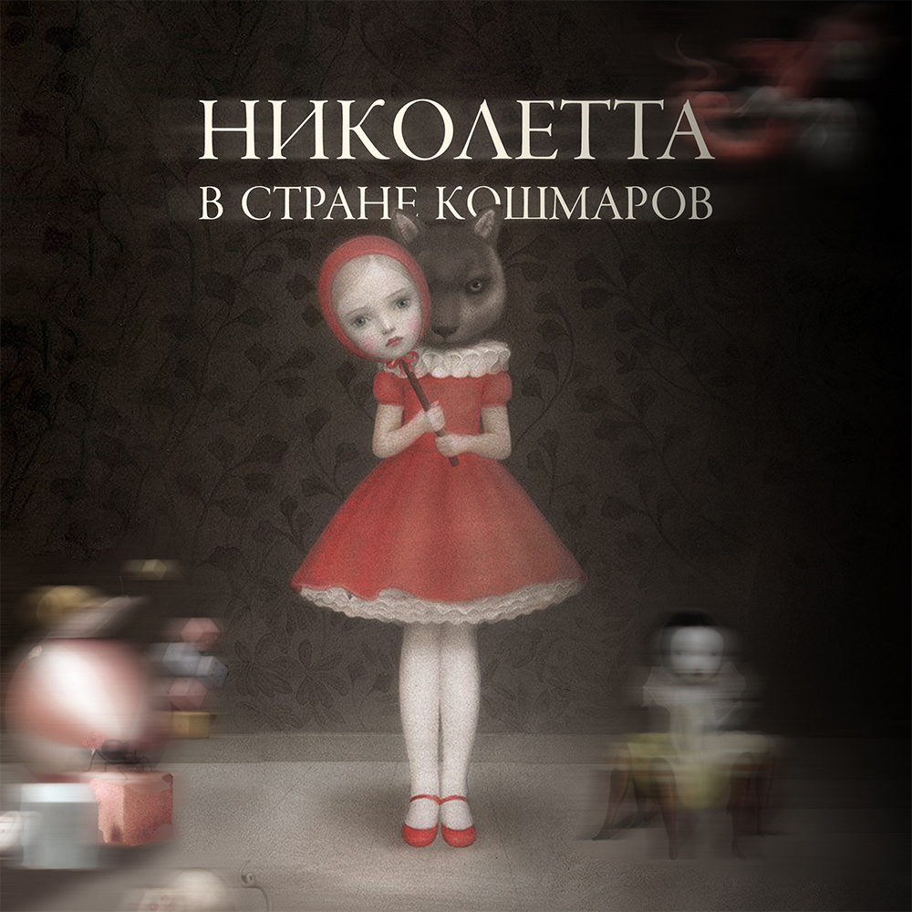
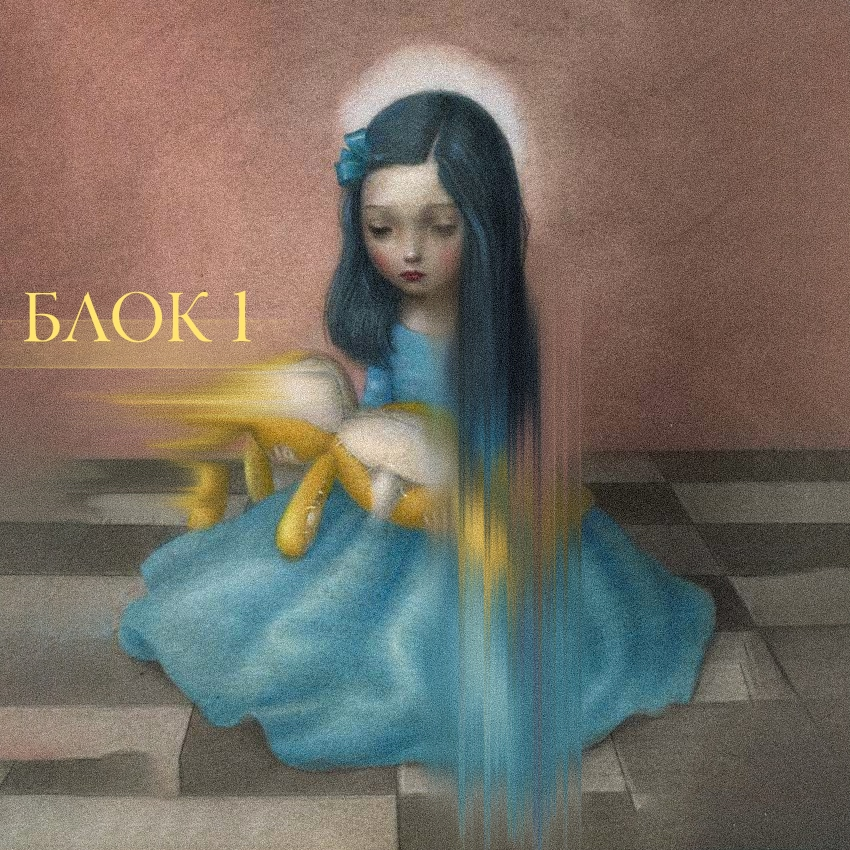
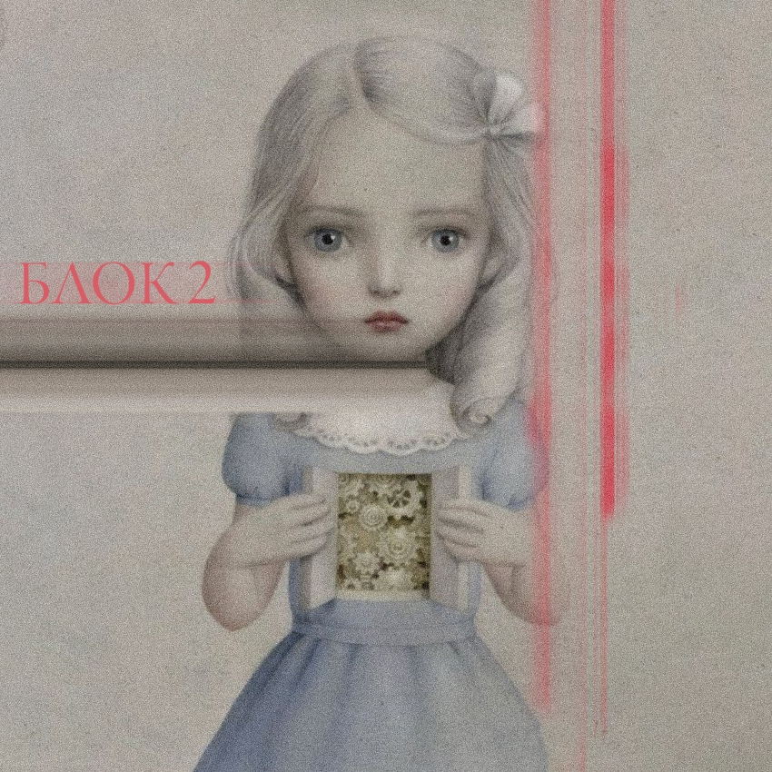
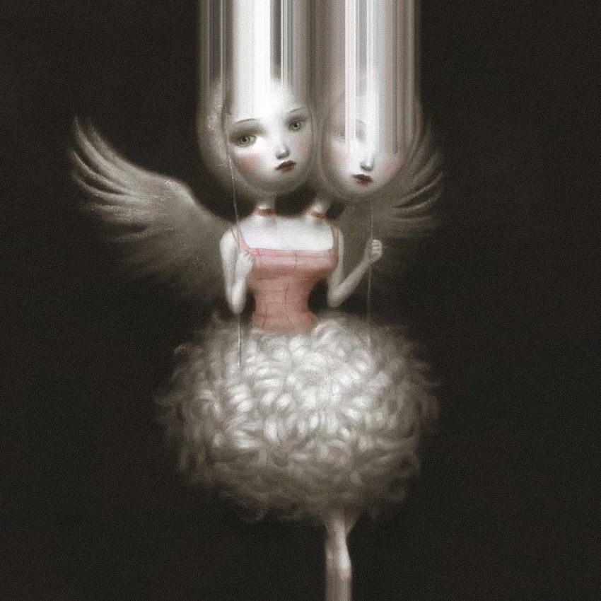

Николетта в стране кошмаров
Эзотерический подход к картам Таро давно исчерпал себя. Карты стали не просто инструментом для «погадашек» на суженого-ряженого, но при грамотном использовании способны стать инструментом психологического консультирования.
И одной из лучших колод современности для реализации подхода психологического консультирования в Таро по праву считается Таро Николетты Чекколи. Колода, созданная по мотивам творчества итальянской художницы Николетты Чекколи, которая сквозь обертку розовых сахарных миров и миленьких девочек смогла дотянуться до проблем сепарации, травм женской гендерной социализации и потери невинности и наивности во всех смыслах.
Так что, если вы хотите:
Стать востребованным тарологом-психологом
Научиться тонким раскладам без «шизотерики»
Проработать свои глубинные убеждения
Видеть глубину за психологической защитой
Узнать больше о человеческой психологии
Стать профи в темах травм и страхов
….то стоит выйти из своей зоны комфорта и взглянуть в сахарный мир собственных кошмаров.
О курсе
Я приглашаю вас в курс-погружение «Николетта в стране кошмаров», посвященного творчеству Николетты Чекколи и ее колоды.
Чтобы начать погружение – не нужно досконально знать систему Таро и проходить базовые курсы, но нужно быть готовым столкнуться со скелетами, живущими в шкафах вашей собственной психики и быть готовым к личностному росту.
После этого курса вы сможете работать с колодой Николетты Чекколи, делать расклады и проводить консультации, даже если не проходили никакого другого обучения по картам Таро!
Еще одна волшебная особенность этого курса - вы:
- Изучите колоду - ее основной символизм, значения арканов в разных сферах жизни, научитесь психологическому чтению раскладов
- Получите и выполните психологические техники, задания и инструменты для того, чтобы проработать собственные «затыки» на пути к достижению жизни вашей мечты
Почему именно этот курс?
Несколько лет назад я сама прошла курс от ненависти до любви к этим хладнокровным девочкам и тем самым смогла решить несколько огромных проблем, проникающих практически во все сферы своей жизни.
Я скрупулезно изучала творчество Николетты до «упаковки» ее работ в Таро, проводила параллели между сказочными существами, анализировала редкие, но меткие комментарии художницы во избежание «отсебятины», которой порой пестрят книги по данной колоде.
Особенность этого курса в том, что я не могу оставить свое психологическое образование вне этой колоды и я посчитала крайне важным не только разобрать основной символизм каждой карты и спектр ее значений, но и наполнить курс психотерапевтическими задачками и техниками, которые Вы (по желанию) примените на себе.
Буквально - курс «Николетта в стране кошмаров» - это теоретический курс-изучение колоды и психотерапия в одном флаконе!
На курсе мы с вами:
- Проанализируем основных персонажей и места действия в творчестве Николетты Чекколи
- Поймем значение каждого аркана, учитывая семантику, комментарии художницы и мифологию
- Будем практиковать максимально объективное и глубокое чтение раскладов (прививка от проекций)
- Проведем психологическую работу с собственными препятствиями
- Наполним арсенал таролога различными нетривиальными техниками
Курс универсален и подходит как для новичков, так и для профессионалов. Он будет полезен даже для тех, кто уже работает на колоде Таро Николетты Чекколи, но хочет пополнить свою копилку знаний новым взглядом на арканы.
После обучения Вы:
- Владеете колодой Николетты Чекколи и выгодно отличаетесь от конкурентов психологическим чтением
- Сэкономили время на поиск работ автора и проработку колоды
- Во время расклада отделяете свои личные проекции от ситуации клиента
- Имеете в своем арсенале уникальные терапевтические техники (сказки, тесты, медитации)
- Узнали больше о себе и решили ряд психологических проблем
Программа курса

- Николетта Чекколи: история творчества, источники вдохновения
- Основные персонажи: Крампус, сладости, овощи и др.
- Подробный анализ 78 арканов Таро Николетты Чекколи
По итогу блока вы:
- поймете значение каждого аркана и символизм персонажей
- узнаете, какие травмы и комплексы могут скрываться за проблемами
- сможете строить перспективу развития ситуации, опираясь на бэкграунд

- Алгоритм чтения расклада с примерами
- Ведение дневника с результатами техник
- Схемы и разборы авторских раскладов
По итогу блока вы:
- усовершенствуете свою технику чтения раскладов
- получите в копилку психологические инструменты для работы
- сможете поработать со своими психологическими проблемами
Формат обучения
На данный момент набор на живой поток не ведется, курс доступен для приобретения в записи.
Видеоуроки
63,2 часа материала
Доступ
Неограниченный доступ
Группы
VK и Telegram
Конспекты
PDF-презентации

Стоимость и условия
Краткий обзор особенностей Таро Николетты Чекколи. Отвечаем на животрепещущий вопрос: "универсальна ли колода?", на примере расклада.